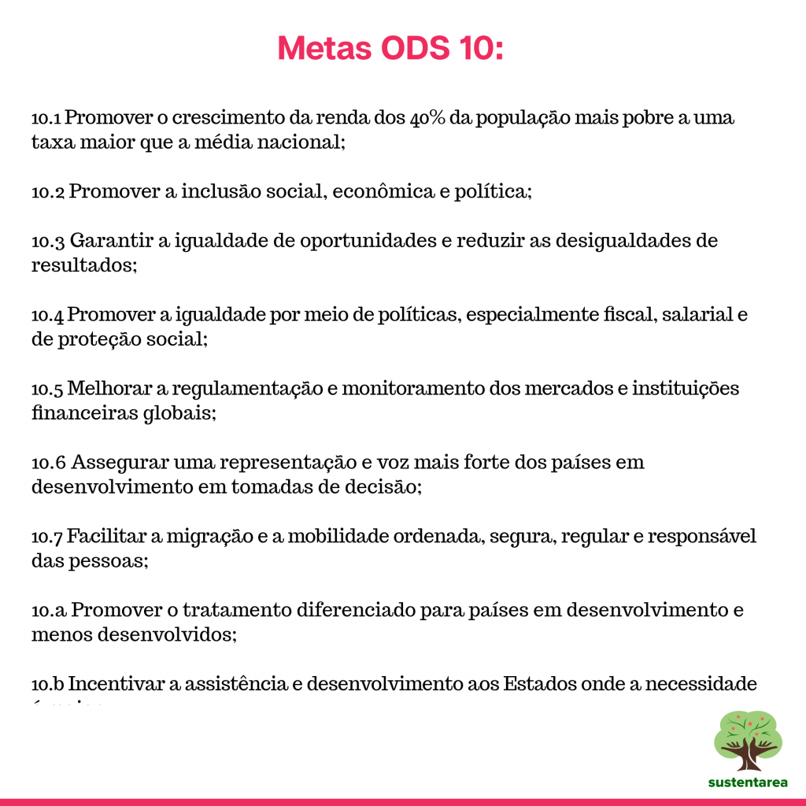

ODS 10: Redução das Desigualdades

A desigualdade é um dos maiores desafios do século XXI, afetando o crescimento econômico, a qualidade de vida e o acesso a direitos fundamentais como saúde e educação. Para enfrentar essa questão, a ONU criou o Objetivo de Desenvolvimento Sustentável (ODS) 10, que tem como meta reduzir a desigualdade dentro dos países e entre eles, promovendo inclusão social, econômica e política para todos.
A desigualdade se manifesta de diversas formas ao redor do mundo. Em países em desenvolvimento, ela está ligada à falta de acesso a serviços básicos, à concentração de renda e à baixa mobilidade social. Já em países desenvolvidos, o problema se apresenta na forma de exclusão econômica de minorias e na dificuldade de ascensão social.
Para combater essa realidade, o ODS 10 inclui metas como:
Essas metas buscam não apenas reduzir as disparidades de renda, mas também fortalecer a participação política e social de grupos vulneráveis.
Saiba mais sobre as metas do ODS 10:
Embora muitas iniciativas tenham sido criadas para reduzir a desigualdade, diversos desafios ainda dificultam a implementação do ODS 10, como:
A falta de investimentos é um dos maiores desafios atualmente em nossa sociedade.

A superação desses desafios exige um esforço conjunto entre governos, sociedade civil e organizações internacionais.
Apesar dos obstáculos, existem projetos ao redor do mundo que demonstram como é possível reduzir a desigualdade:
Esses exemplos mostram que, quando há investimentos e vontade política, a desigualdade pode ser reduzida significativamente.
Quer entender melhor? Assista esse vídeo sobre como funciona o Bolsa Família:
A construção de um mundo mais igualitário depende da participação ativa da sociedade. Jovens têm um papel fundamental ao se envolverem em debates políticos, cobrarem mudanças e apoiarem iniciativas sociais que promovam inclusão e oportunidades para todos.
O ODS 10 não é apenas uma meta global, mas um compromisso essencial para garantir justiça social e desenvolvimento sustentável. Para que a desigualdade seja realmente combatida, é preciso:
A luta por um mundo mais igualitário é responsabilidade de todos. Somente com esforço coletivo será possível garantir dignidade e oportunidades para todos os cidadãos, sem deixar ninguém para trás.